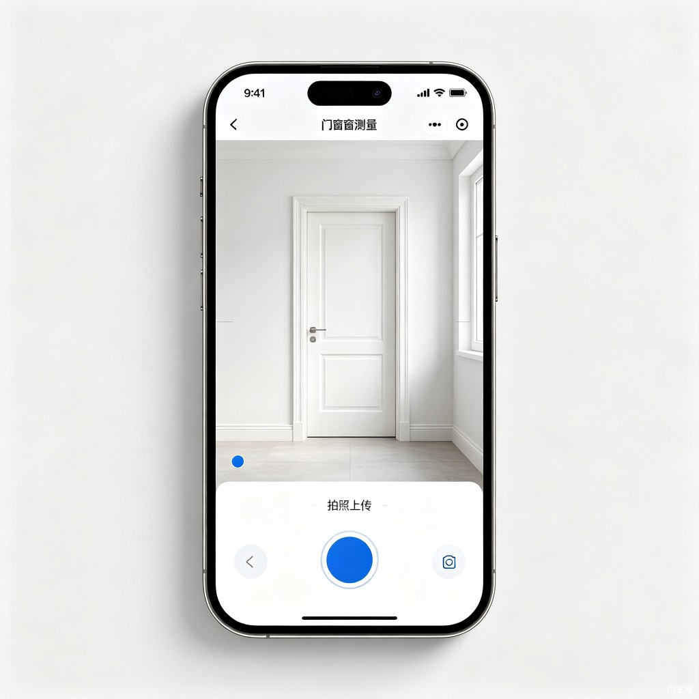
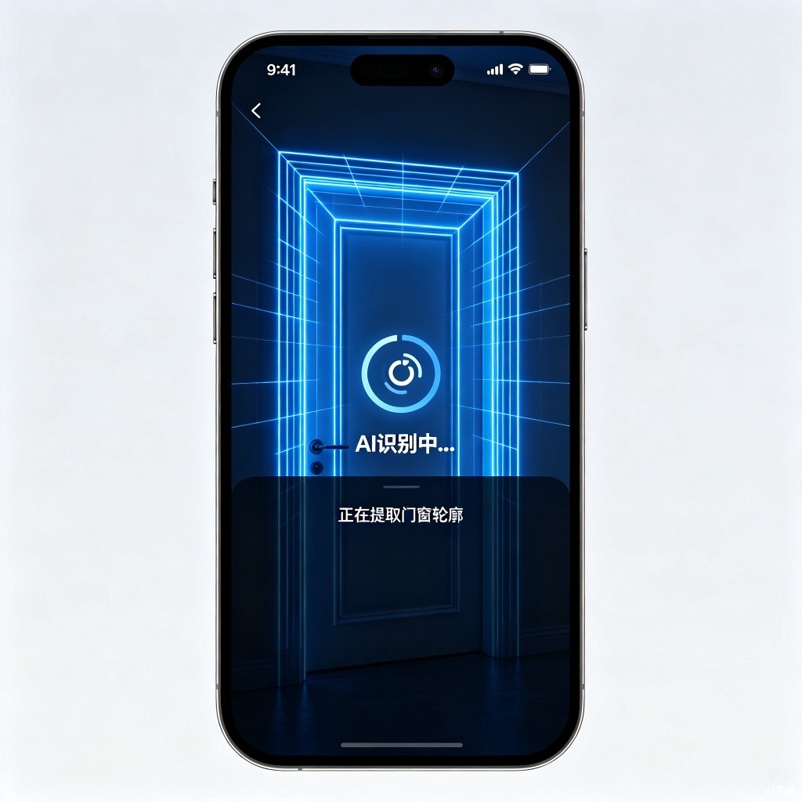
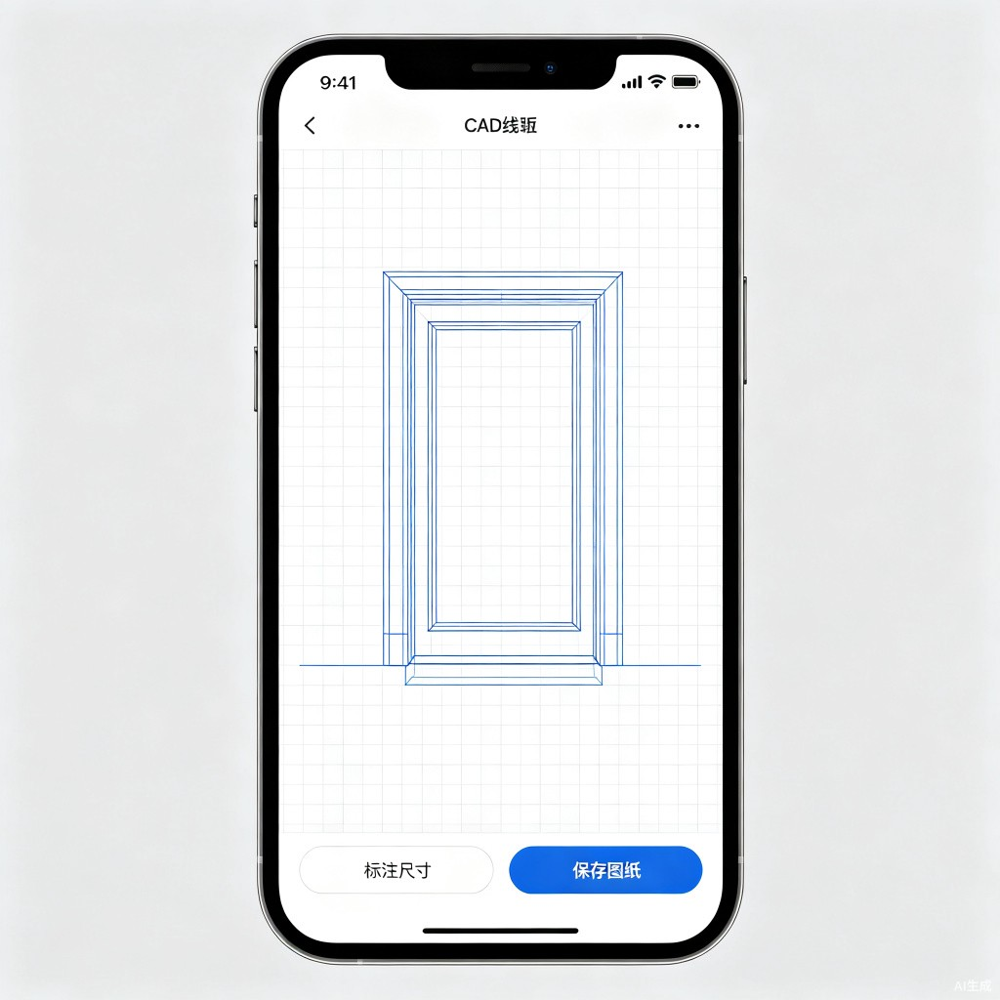
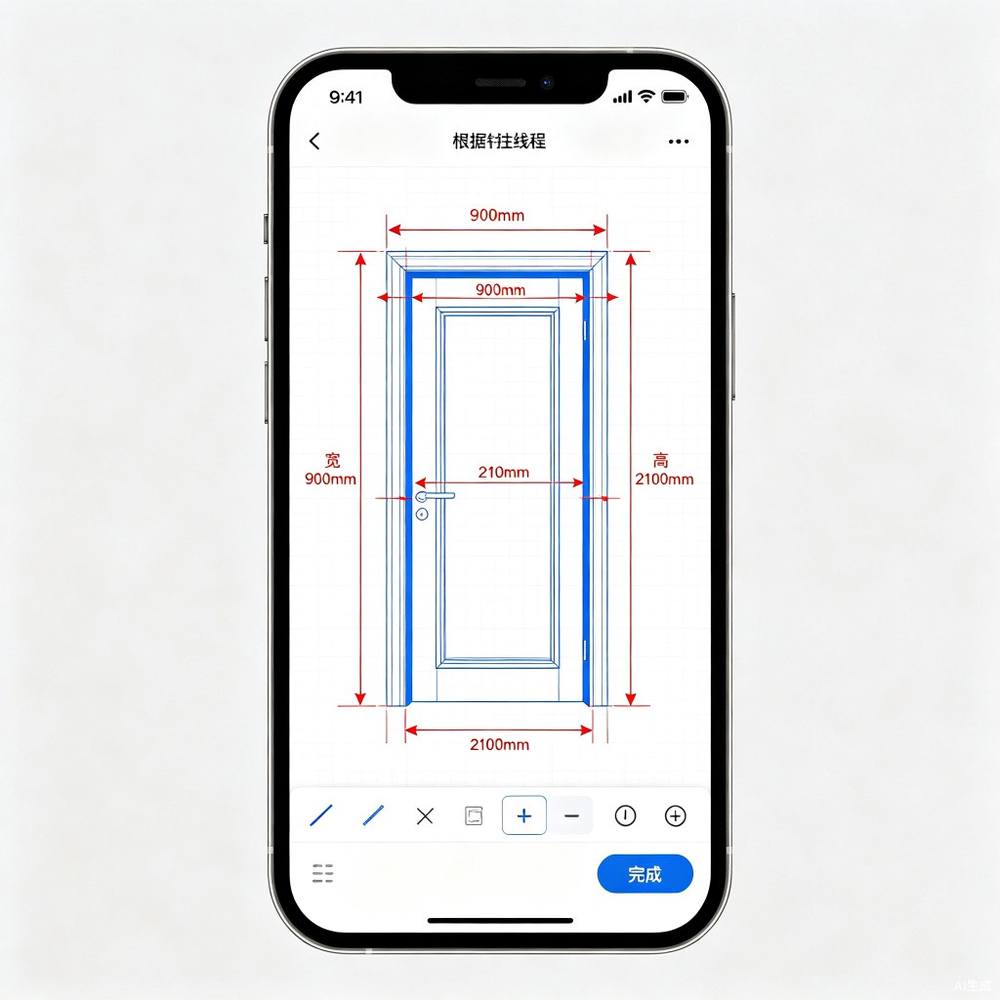

为什么做这个？
在门窗行业，现场量完尺寸后还要人工描CAD轮廓，重复劳动多、出图慢，严重影响后续报价和生产效率。工人累、设计师烦，这个环节成了整个流程的瓶颈。
📝
手绘草图不精确
现场手绘草图歪歪扭扭，尺寸误差大，回到办公室还要重新理解。
⏰
描图耗时半小时
对着照片一笔笔描CAD轮廓，熟练设计师也要20-30分钟。
🗣
沟通成本高
不会CAD的工人只能口头描述，信息传递容易失真、返工。
核心交互流程
从现场拍照到生成CAD框架底图，只需四步，全程在小程序内完成。
1

拍照上传
打开小程序，对准门窗现场拍照，或从相册选取已有照片。
2

AI 识别轮廓
后台调用AI模型分析照片，自动提取门窗的边框与结构轮廓。
3

生成CAD线框
几秒钟内输出干净的CAD框架底图，比例关系一目了然。
4

标注实际尺寸
对照现场测量数据，在框架图上手动填入尺寸，完成图纸。
flowchart LR
A["📷 现场拍照"] --> B["⚡ AI识别轮廓"]
B --> C["📈 生成CAD线框"]
C --> D["📝 标注实际尺寸"]
D --> E["✅ 保存/导出图纸"]
目标用户
面向门窗产业链上的多类角色，解决他们在不同场景下的出图难题。
🏭
门窗生产厂家
快速输出规范示意图，提升专业形象，缩短从量尺到报价的周期。
🔧
小型装修团队
没有专职设计师也能快速出图，减少与客户之间的沟通误差。
🎨
独立设计师
将枯燥的描轮廓工作交给AI，把精力投入到更有价值的设计环节。
👷
现场施工师傅
不用学CAD，拍张照就能生成专业图纸，直接用于报价和沟通。
价值与意义
60%+
出图效率提升
把"描轮廓"从半小时压缩到几秒钟，用户只需做最有价值的"量尺寸 + 标注"环节。
效率提升0门槛
降低CAD使用门槛
不会画CAD的施工师傅也能快速输出规范示意图，让中小门窗商家也能拥有专业出图能力。
商业价值<5秒
AI 轮廓生成速度
后台AI模型在数秒内完成照片分析与轮廓提取，实时返回CAD框架底图。
技术性能↓80%
减少返工损失
规范图纸减少沟通误差，避免因尺寸理解偏差导致的下单错误和材料浪费。
风险控制